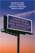
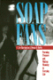
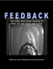
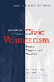
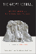
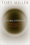
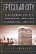
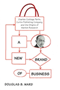

|
Dark Days in the Newsroom
McCarthyism Aimed at the Press
Alwood, Edward
216 pp • 5.5x8.25 • Spring 2007
paper 978-1-59213-342-0
cloth 978-1-59213-341-3
|
|
Rebuilding the News
Metropolitan Journalism in the Digital Age
Anderson, C.W.
236 pp • 6x9 • Fall 2012
paper 978-1-4399-0934-8
cloth 978-1-4399-0933-1 |
|
Voice
Over
The Making of Black Radio
Barlow, William 334 pp • 6x9 • Fall
1998
paper 978-1-56639-667-7
cloth 978-1-56639-666-0
|

|
Invasion of the Mind Snatchers
Television's Conquest of America in the Fifties
Burns, Eric
352 pp • 6x9 • Fall 2010
cloth 978-1-4399-0288-2
|
|
Savage Portrayals
Race, Media, and the Central Park Jogger Story
Byfield, Natalie
P.
242 pp • 6x9 • Fall 2013
paper 978-1-4399-0634-7
cloth 978-1-4399-0633-0 |
 |
Policing
Pop
edited by Cloonan, Martin and Reebee Garofalo 256
pp • 7x10 • Fall 2002
paper 978-1-56639-990-6
cloth 978-1-56639-989-0
|
|
Religion and Political Tolerance in America
Advances in the State of the Art
edited by Djupe, Paul A.
270 pp • 6x9 • Spring 2015
paper 978-1-4399-1233-1
cloth 978-1-4399-1232-4 |
 |
Troubled
Pasts
News and the Collective Memory of Social Unrest
Edy, Jill A. 240 pp • 5.5x8.25 •
Spring 2006
paper 978- 1-59213-497-7
cloth 978- 1-59213-496-0
|
|
Growing
Up with Television
Everyday Learning Among Young Adolescents
Fisherkeller, JoEllen 224 pp • 6x9 •
Spring 2002
paper 978-1-56639-953-1
cloth 978-1-56639-952-4
|
 |
Campaign Advertising and American Democracy
Franz, Michael M., Paul B. Freedman, Kenneth M. Goldstein and Travis N. Ridout
216 pp • 6x9 • Fall 2007
paper 978-1-59213-456-4
cloth 978-1-59213-455-7
|

|
Transient Images
Personal Media in Public Frameworks
Freedman, Eric
230 pp • 6x9 • Fall 2010
paper 978-1-4399-0327-8
cloth 978-1-4399-0326-1
|
 |
Reverse Engineering Social Media
Software, Culture, and Political Economy in New Media Capitalism
Gehl, Robert W.
226 pp • 5.5x8.25 • Spring 2014
paper 978-1-4399-1035-1
cloth 978-1-4399-1034-4 |

|
The Eternal Present of Sport
Rethinking Sport and Religion
Grano, Daniel A.
288 pp • 6x9
• Spring 2017
paper 978-1-4399-1280-5
cloth 978-1-4399-1279-9
|
|  |
Soap
Fans
Pursuing Pleasure and Making Meaning in Everyday Life
Harrington, C. Lee and Denise D. Bielby 240
pp • 6x9 • Fall 1995
paper 978-1-56639-330-0
cloth 978-1-56639-329-4
|
 |
Afterimage
Film, Trauma, and the Holocaust
Hirsch, Joshua 232 pp • 6x9 • Fall
2003
paper 978-1-59213-209-6
cloth 978-1-59213-208-9
|
 |
Exploring the Roots of Digital and Media Literacy through Personal Narrative
edited by Hobbs, Renee
226 pp • 5.5x8.25 • Spring 2016
paper 978-1-4399-1158-7
cloth 978-1-4399-1157-0
|
|  |
Feedback
The Video Data Bank Catalog of Video Art and Artist Interviews
edited by Horsfield, Kate and Lucas Hilderbrand
360 pp • 8.5x11 • Fall 2005
cloth 978-1-59213-182-2
|
|
The White Savior Film
Content, Critics, and Consumption
Hughey, Matthew W.
230 pp • 6x9 • Spring 2014
paper 978-1-4399-1001-6
cloth 978-1-4399-1000-9 |

|
The Story Is True
The Art and Meaning of Telling Stories
Jackson, Bruce
256 pp • 5.5x8.25 • Spring 2007
paper 978-1-59123-607-0
cloth 978-1-59123-606-3
|
|
The
Sons and Daughters of Los
Culture and Community in L.A.
edited by James, David E. 264 pp • 7x10
• Spring 2003
paper 978-1-59213-013-9
cloth 978-1-59213-012-2
|
|
Phil Jasner "On the Case"
His Best Writing on the Sixers, the Dream Team, and Beyond
edited by Jasner, Andy
264 pp • 6x9 • Fall 2017
cloth 978-1-4399-1494-6 |
 |
Pop
Music and the Press
edited by Jones, Steve 288 pp • 6x9 •
Fall 2002
paper 978-1-56639-966-1
cloth 978-1-56639-965-4
|
|
Larry
Kane's Philadelphia
Kane, Larry, foreword by Dan Rather 280 pp
• 6x9 • Fall 2000
paper 978-1-56639-961-6
cloth 978-1-56639-806-0
|
 |
New Advances in the Study of Civic Voluntarism
Resources, Engagement, and Recruitment
edited by Klofstad, Casey A.
288 pp • 6x9 • Fall 2016
paper 978-1-4399-1325-3
cloth 978-1-4399-1324-6
|

|
The Great Refusal
Herbert Marcuse and Contemporary Social Movements
edited by Lamas, Andrew T., Todd Wolfson, and Peter N. Funke
410 pp • 6x9 • Fall 2016
paper 978-1-4399-1304-8
cloth 978-1-4399-1303-1 |
 |
Hybridity,
or the Cultural Logic of Globalization
Kraidy, Marwan M. 240 pp • 6x9 •
Spring 2005
paper 978-1-59213-144-0
cloth 978-1-59213-143-3
|
|
Storytelling
in Daily Life
Performing Narrative
Langellier, Kristin M. and Eric E. Peterson 288
pp • 7x10 • Fall 2003
paper 978-1-59213-213-3
cloth 978-1-59213-212-6
|
|
Pacifica
Radio
The Rise of an Alternative Network
Lasar, Matthew 320 pp • 6x9 • Spring
2000
paper 978-1-56639-777-3
|
 |
Multiple
Modernities
Cinemas and Popular Media in Transcultural East Asia
edited by Lau, Jenny Kwok Wah 264 pp •
7x10 • Fall 2002
paper 978-1-56639-986-9
cloth 978-1-56639-985-2
|
 |
Gender
Politics and MTV
Voicing the Difference
Lewis, Lisa A. 300 pp • Spring 1990
paper 978-0-87722-942-1
cloth 978-0-87722-693-2 |
|
The Chinese Diaspora on American Screens
Race, Sex, and Cinema
Marchetti, Gina
258 pp • 6x9 • Spring 2012
cloth 978-1-59213-518-9
|
 |
Serial Fu Manchu
The Chinese Supervillain and the Spread of Yellow Peril Ideology
Mayer, Ruth
216 pp • 6x9 • Fall 2013
paper 978-1-4399-1056-6
cloth 978-1-4399-1055-9 |

|
Managing the Infosphere
Governance, Technology, and Cultural Practice in Motion
McDowell, Stephen D., Philip E. Steinberg and Tami K. Tomasello
248 pp • 5.5x8.25 • Fall 2007
paper 978-1-59213-280-5
cloth 978-1-59213-279-9
|
|
Race Appeal
How Candidates Invoke Race in U.S. Political Campaigns
McIlwain, Charlton D. and Stephen M. Caliendo
272 pp • 6x9 • Spring 2011
paper 978-1-4399-0276-9
cloth 978-1-4399-0275-2
|
|
Emergency
Broadcasting and 1930s American Radio
Miller, Edward D. 264 pp • 5.5x8.25 •
Fall 2002
paper 978-1-56639-993-7
cloth 978-1-56639-992-0
|

|
Blow Up the Humanities
Miller, Toby
172 pp • 5.5x8.25 • Fall 2012
paper 978-1-4399-0983-6
cloth 978-1-4399-0982-9
|
 |
Cultural
Citizenship
Cosmopolitanism, Consumerism, and Television in a Neoliberal
Age
Miller, Toby
248 pp • 6x9 • Fall 2006
paper 978-1-59213-561-5
cloth 978-1-59213-560-8
|
 |
Sportsex
Miller, Toby 192 pp • 6x9 • Fall
2002
paper 978-1-56639-994-4
cloth 978-1-56639-864-0
|
|
All
Talk
The Talkshow in Media Culture
Munson, Wayne 288 pp • 6x9 • Fall
1992
paper 978-1-56639-194-8
cloth 978-0-87722-995-7 |
|
Public Financing in American Elections
edited by Panagopoulos, Costas
268 pp • 6x9 • Spring 2011
paper 978-1-4399-0693-4
cloth 978-1-4399-0692-7
|

|
Blue Skies
A History of Cable Television
Parsons, Patrick R.
816 pp • 6x9 • Fall 2007
cloth 978-1-59213-287-4 |
|
New
Jack Jocks
Rebels, Race, and the American Athlete
Platt, Larry 208 pp • 5.5x8.25 •
Spring 2002
paper 978-1-59213-191-4
cloth 978-1-56639-954-8
|
|  |
Specular
City
Transforming Culture, Consumption, and Space in Buenos Aires,
1955-1973
Podalsky, Laura 304 pp • 6x9 • Fall
2003
paper 978-1-56639-948-7
cloth 978-1-56639-947-0
|
|
The Persuasive Power of Campaign Advertising
Ridout, Travis N. and Michael M. Franz
200 pp • 5.5x8.25 • Spring 2011
paper 978-1-4399-0333-9
cloth 978-1-4399-0332-2
|
|
The
Sponsored Life
Ads, TV, and American Culture
Savan, Leslie 368 pp • 6x9 • Fall
1994
paper 978-1-56639-245-7
cloth 978-1-56639-244-0
|
 |
Global Television
Co-Producing Culture
Selznick, Barbara J.
224 pp • 5.5x8.25 • Spring 2008
paper 978-1-59213-504-2
cloth 978-1-59213-503-5
|
|
The Production of Modernization
Daniel Lerner, Mass Media, and "The Passing of Traditional Society"
Shah, Hemant
226 pp • 6x9 • Spring 2011
cloth 978-1-4399-0624-8
|
 |
Rubble
Films
German Cinema in the Shadow of the Third Reich
Shandley, Robert R. 240 pp • 6x9 •
Spring 2001
paper 978-1-56639-878-7
cloth 978-1-56639-877-0
|

|
The Renewal of Cultural Studies
edited by Smith, Paul
272 pp • 6x9 • Fall 2011
paper 978-1-4399-0253-0
cloth 978-1-4399-0252-3
|
|
Air
Wars
The Fight to Reclaim Public Broadcasting
Starr, Jerold M. 352 pp • 6x9 •
Fall 2001
paper 978-1-56639-913-5
|
|
Technological
Visions
The Hopes and Fears that Shape New Technologies
edited by Sturken, Marita, Douglas Thomas and Sandra Ball-Rokeach
384 pp • 6x9 • Fall 2003
paper 978-1-59213-227-0
cloth 978-1-59213-226-3
|
|
Chinese Connections
Critical Perspectives on Film, Identity, and Diaspora
edited by Tan, See-Kam, Peter X. Feng and Gina Marchetti 320 pp • 6x9 • Fall 2008
paper 978-1-59213-268-3
cloth 978-1-59213-267-6
|

|
Sync
Stylistics of Hieroglyphic Time
Tobias, James
304 pp • 6x9 • Spring 2010
cloth 978-1-4399-0201-1
|
 |
Who
Killed George Polk?
The Press Covers Up a Death in the Family
Vlanton, Elias with Zak Mettger 352 pp •
6x9 • Fall 1995
cloth 978-1-56639-367-6 |
 |
A New Brand of Business
Charles Coolidge Parlin, Curtis Publishing Company, and the Origins of Market Research
Ward, Douglas B.
240 pp • 5.5x8.25 • Spring 2009
cloth 978-1-43990-015-4
|
|
The
Forgotten Network
DuMont and the Birth of American Television
Weinstein, David 240 pp • 6x9 •
Spring 2004
paper 978- 1-59213-499-1
cloth 978-1-59213-245-4
|
|
Yellow
Journalist
Dispatches from Asian America
Wong, William 288 pp • 6x9 • Fall
2000
paper 978-1-56639-830-5
cloth 978-1-56639-829-9
|